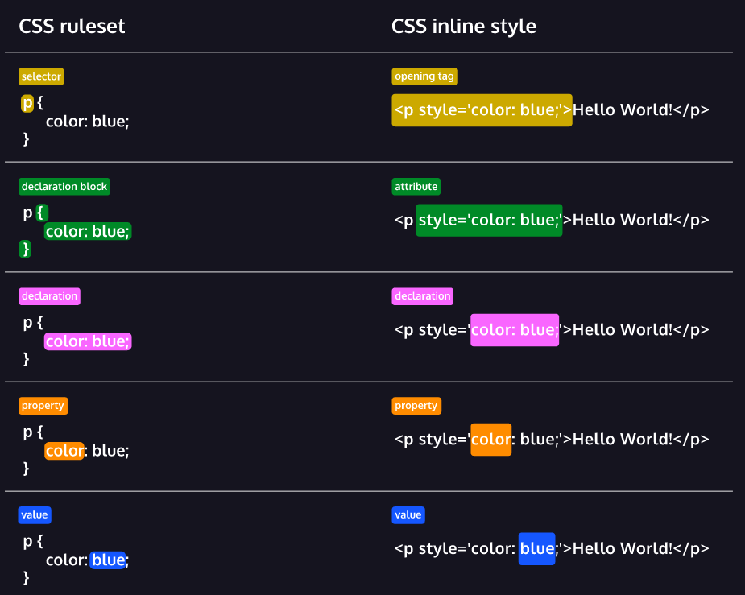
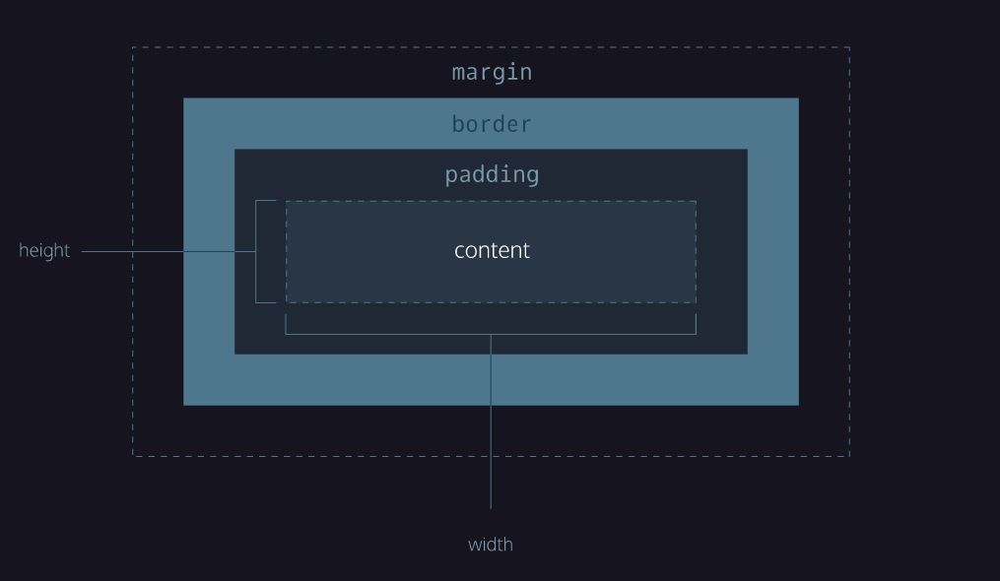

Apprendre CSS
Ce support de cours (et mémo) est inspiré directement du cours "Learn CSS" de Codecademy
Syntaxe et Usage
Anatomie du CSS
Ici sont définis les termes principaux qui nous permettent de comprendre comment une règle CSS est formulée :

- Un sélecteur permet de cibler l'élément qu'on souhaite styliser
- Le bloc de déclaration se site entre les accolades
{}et contient les déclarations CSS - La déclaration est un groupe de propriétés et valeurs CSS qui vont s'appliquer à l'élément pour le styliser
- La propriété est la première partie d'une déclaration qui signifie quelle caractéristiques visuelle est modifiée
- La valeur est la deuxième partie de la déclaration qui signifie comment est modifiée la caractéristique visuelle
"Inline Styles" & Feuille de Style Interne / Externe
Il est possible d'écrire directement dans le fichier HTML des règles CSS. C'est ce qu'on appelle l'inline style. C'est une manière rapide de styliser un élément HTML :
<p style='color: red;'>I'm learning to code!</p>
<p style='color: red; font-size: 20px;'>I'm learning to code!</p>
Cette manière n'est pas le meilleur moyen d'écrire des règles CSS.
HTML nous autorise à écrire du code CSS dans une section dédiée du , avec l'élément <style> inséré dans l'élément head du document .html. C'est la feuille de style interne (internal stylesheet):
Il vaut mieux éviter de mélanger le code HTML avec le code CSS. Pour cela, nous créons une (ou des) feuille de style externe (external stylesheet) avec l'extension de fichier .css : styles.css :
De cette manière, nous pouvons écrire autant de code CSS sans sacrifier la lisibilité et la maintenabilité de nos fichiers html
Lien vers le fichier CSS
En séparant notre code CSS de notre code HTML, notre fichier HTML ne sait pas où se trouve la feuille de style. Il faut lui "linker" ou lui spécifier.
Pour cela, nous utilisons l'élément HTML <link> inséré dans l'élélement <head> du fichier:
<head>
<link href='https://www.codecademy.com/stylesheets/style.css' rel='stylesheet'>
<link href='./style.css' rel='stylesheet'>
</head>
hrefest l'atribut qui spécifie l'adresse ou le chemin vers le fichier CSSrelspécifie la relation entre le fichier HTML et le fichier CSS. Vu que ce lien mène vers une feuille de style, nous spéficionsstylesheet
Sélecteurs
CSS peut sélectionner les éléments HTML par type, classe, ID et attribut
Tous les éléments peuvent être sélectionnés par le sélecteur universel
Tip
Lors de votre développement d'interface, vous pouvez configurer cet attribut universel pour visualiser la disposition des éléments HTML.
Comportement de l'élément
Un élément peut avoir différent état en utilisant le sélecteur de pseudo-classe
/* :hover permet de spécifier l'apparence d'un élément au moment où l'utilisateur le survole avec le pointeur, sans nécessairement l'activer */
a:hover {
color:darkorange;
}
Classes d'élément
Plusieurs classes CSS peuvent être appliquées à un même élément HTML
ID d'élément
Les classes peuvent être réutilisées, tandis que les ID ne peuvent utilisés qu'une seule fois
<a class="article external-link third-classe ...">
<h5 id="first-title"></h5>
<a class="article external-link third-classe ...">
<h5 id="second-title"></h5>
Spécificité
Specificity refers to how a browser decides which styles to display when there are multiple styles defined that could apply to the same element.
Les ID sont plus spécifique que les classes. Et les classes sont plus spécifiques qu'un type d'élément. Les conséquences sont que les ID peuvent écraser les styles d'une classe et les classe speuvent écraser les styles d'un élément
Chaînage
Plusieurs sélecteurs peuvent être chaînés ensemble pour sélectionner un élement. Cela augmente la spécificité mais peut être nécessaire pour le cibler précisemment.
Eléments imbriqués
Les éléments imbriqués peuvent être sélectionnés en séparant les sélecteurs d'un espace :
Groupement
Plusieurs sélecteurs (n'ayant pas forcément de lien) peuvent être groupé en les séparant d'une virgule ,
Règles visuelles
L'objectif de CSS est d'ajouter du style aux pages Web, et chaque élément de la page peut avoir de nombreuses propriétés de style. Certaines des propriétés de base concernent la taille, le style et la couleur de l'élément.
Famille de police
Vous pouvez modifier la famille de police d'un élément comme ceci :
Lorsque nous définissons une pollièce de caractères sur une page web, plusieurs points sont à retenir :
- La police spécifiée doit être installée sur l'ordinateur ou dans le navigateur (téléchargée avec le site)
- Les polices sûres sont un groupe de polices prises en charge sur la plupart des navigateurs et systèmes d'exploitation
- A moins d'utiliser des polices sûres, votre police spécialement choisie peut ne pas apparaître de la même manière sur tous les support (navigateurs, systèmes d'exploitation)
- Lorsque le nom d'une police est composé de plusieurs mots, il est préférable de l'écrire en guillement
'comme-suit :font-family: 'Courier New';
Taille de police
Selon les besoins, plusieurs sections d'une page peuvent ne pas avoir la même taille de police.
Pour modifier la taille d'un texte, nous avons la propriété font-size
Poids de la police
La propriété font-weight contrôle le degré de gras ou de finesse du texte
Alignement de texte
Par défaut, le texte apparaît sur le côté gauche du conteneur dans lequel il réside.
Pour l'aligner, nous pouvons utiliser la propriété text-align
Couleurs et couleurs de fond
color permet de définir la couleur de texte et background-color celle derrière le texte
Opacité
L'opacité est la mesure de transparence, entre 0 et 1, d'un élément sélectionné :
Image d'arrière plan
CSS permet de modifier l'image d'arrière plan d'un élément, en utilisant background-image
L'exception !Important
L'exception !Important peut être utilisé dans des déclarations pour réécrire n'importe quel style, quoi que soit sa spécificité. C'est pourquoi, il ne devrait jamais être utilisé.
Le 'Box Model'

height et width
Le contenu d'un élément a deux dimensions : une hauteur et une largeur. Par défaut, les dimensions d'une boîte HTML sont définies pour contenir le contenu brut de la boîte.
border
Une bordure est une ligne qui entoure un élément. Ils peuvent être paramétrés par width, style et color :
border-radius
padding
L'espace entre la 'box' et les bordures de la boxe est le padding
- padding-top
- padding-right
- padding-bottom
- padding-left